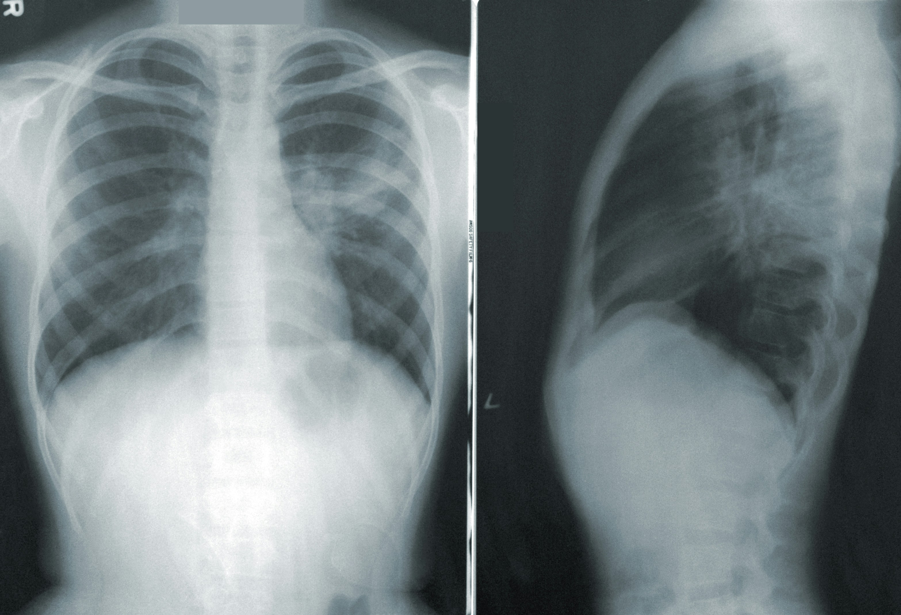
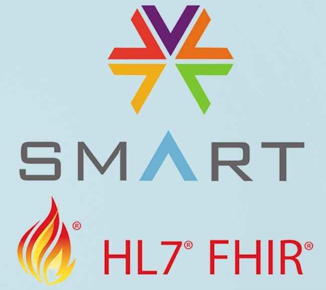

Photo by Nappy on Unsplash
Automated ARDS Diagnosis Using Machine Learning and Regex on EHR Data
We developed a computational method to automate the adjudication of each component of the Berlin Definition for ARDS diagnosis using text and structured EHR data.
medRxiv preprint
GitHub repository (currently private)

Photo by CDC on Unsplash
Robust Extraction of Pneumonia-Associated Clinical States from EHR Data
Implemented a robust data preprocessing pipeline, feature extraction methods, and clustering techniques to identify clinically meaningful pneumonia states from EHR data.
PNAS paper
GitHub repository

Image by santéware
SMART on FHIR app using Python's Flask framework
This project showcases the development of a Flask application that integrates with EHR systems using the SMART on FHIR authentication and authorization framework.
Try the App!
App instructions
Build the App
Photo by Zesan H. on Unsplash
Copa America 2024 simulation
A two-part series of Medium blog posts where I use Elo ratings and data science techniques to simulate the outcomes of the Copa America 2024.
Part 1: Group Stage
Part 2: Playoffs
Photo by My Profit Tutor on Unsplash
Qatar 2022 FIFA World Cup simulation
A simulation of the Qatar 2022 FIFA World Cup, utilizing Elo ratings and data science techniques to predict match outcomes and tournament progression.
Blog post
By Unknown author. Public Domain: Link
Did Gregor Mendel manipulate his data?
This project investigates the Mendelian paradox, exploring the statistical anomalies in Mendel's genetic experiments that have puzzled scientists for years.
GitHub repository